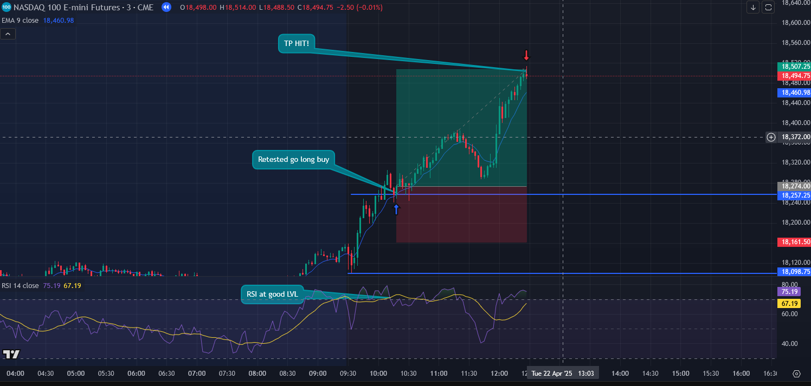

Opening Range Breakout
What is Opening Range Breakout?
The Opening Range Breakout (ORB) is a popular day trading strategy that focuses on the price range established during the first few minutes after the market opens—typically the first 5, 15, or 30 minutes. Traders identify the high and low of this initial range and watch for a breakout above or below it, which can signal strong momentum in that direction. A buy signal is triggered when the price breaks above the range high, while a sell signal occurs if it drops below the range low. The ORB strategy aims to capitalize on early market volatility and directional moves, often using stop-loss orders just inside the opposite end of the range and profit targets based on a multiple of the range size.
What are the steps to doing this strategy?
Step 1. Mark the high and low of the opening range.

Depending on how you want to do your orb, whether it be 5, 15, or 30 minutes, you will go ahead and mark the top and bottom of the candle wicks.
Step 2. Wait for retest and if RSI looks good to back up your long enter.

As time passes, you are going to want to wait for the graph to show a breakout of the ORB and retest it as well for extra reassurence of the market. The graph can break the ORB up or down, if upwards plan for a long and downwards plan for shorts.
Step 3. Target a recent high or low and set TP
At this point we should be entered in a trade and looking for where we want to set the finish line. If we are going LONG we are going to set our TP at a recent high. If we are going SHORT we are going to set our TP at a recent low.